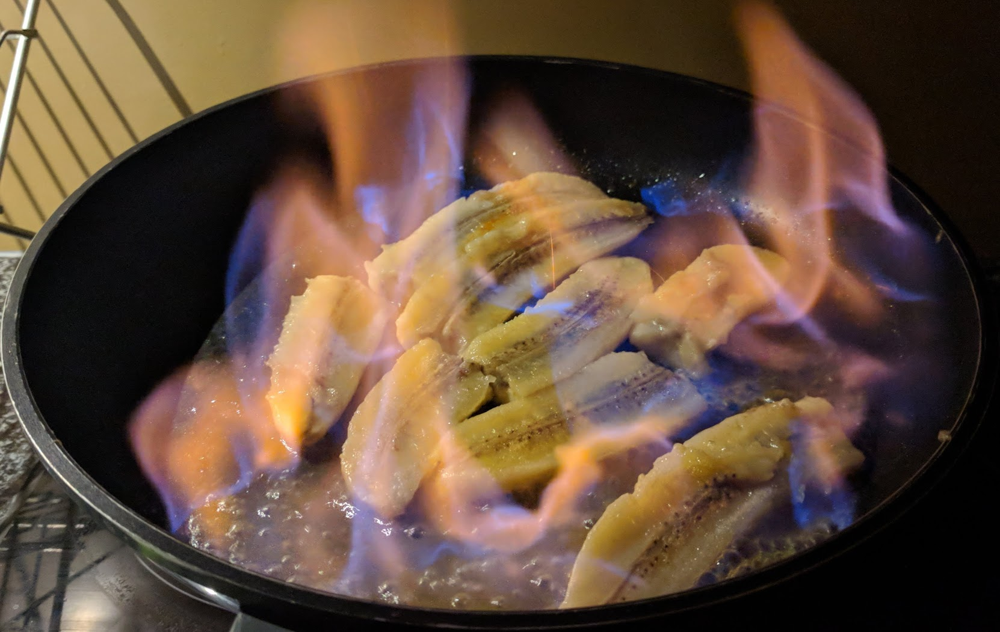

Bananes flambées

Pour 2 personnes :
- Deux bananes
- Une cuillère à soupe de sucre
- Une cuillère à café de cannelle
- Un peu de beurre
- Un bon trait de rhum (pas de l'excellent rhum, mais pas du trop mauvais non plus, par exemple Negrita ou Charrette…)
- Faire fondre le beurre au fond d'une poêle. Éplucher les bananes et les couper en deux dans le sens de la longueur (en faisant en sorte que chaque moitié de banane ait un côté plat, sinon c'est compliqué à cuire :D).
- Ajouter les bananes dans le plat, saupoudrer de sucre et de cannelle, laisser à feu moyen quelques minutes.
- Retourner les bananes quand le côté de la plaque commence à dorer et devenir mou.
- Éteindre la lumière, arroser d'un bon trait de rhum, et craquer une allumette pour flamber le tout. Flammes bleues !
- Une fois que les flammes sont éteintes, servir immédiatement, possiblement avec de la glace à la vanille et/ou du nappage au chocolat si on se sent particulièrement décadent.
Retour à la liste des recettes